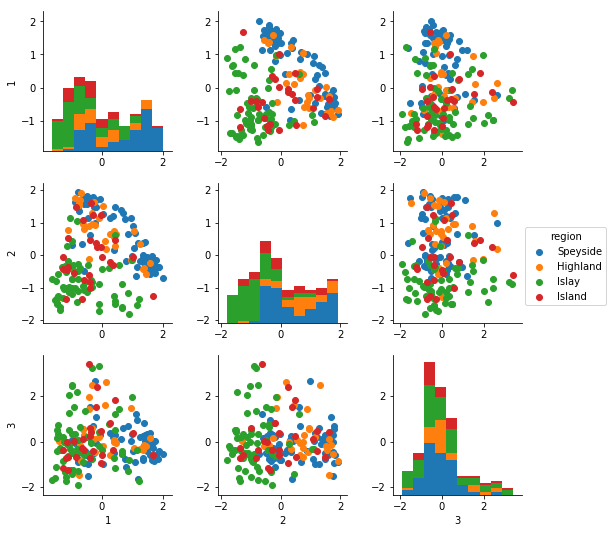
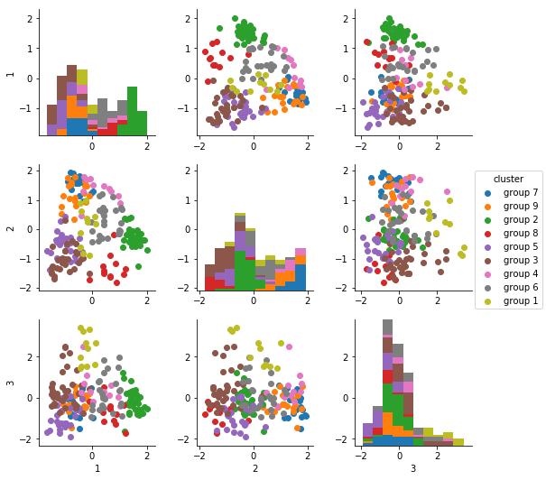

Scotch Landscape
(If you’d rather just skip to the result, you can go here. Alternatively, if you’re super-interested in this analysis and would like to see my source code, you can find on github it here.)
Introduction
If you’ve ever met a craft beer enthusiast, you probably know that beer can be very complicated: there are different malts, hops, and styles to choose from, and there are also strong opinions to accompany each choice… it can take a bit of experimenting to learn your preferences.
Scotch whisky is essentially distilled beer, and distillation adds layers to this complexity: connoisseurs describe scotches with a language every bit as extensive (and every bit as inscrutable) as the language used to describe red wines. This makes it a bit of a challenge to break into the scotch world and to learn what you like — especially since a bottle of scotch lasts a long time and mistakes can be expensive!
Exploring a large parameter space like this one is a good application for machine learning… I can have my laptop crunch through thousands of scotch reviews and find any dominant patterns in the tasting notes. I’ll take scotch reviews from the (impressively active) Scotch SubReddit and attempt to distill this information into something you can use to explore and compare scotches at a glance.
I took the 200 most reviewed scotches, and for each of them downloaded ten reviews from Reddit’s most prolific reviewers. (I use a reviewer’s productivity as a proxy for experience, and therefore reliability… mistaking quantity for quality is a common and fraught error, and I’m quilty of it here.) Then, for each scotch I count up the number of words in different note categories like the following:
| honey | honey honeyed honeysuckle baklava |
|---|---|
| raisin | grape grapes grapey sultanas sultana raisin raisins date dates fig figgy figs prune prunes |
| beer | malt malty maltier maltiest barley beer wheat wheated sourdough bread bready cracker crackers hops oatmeal pastry popcorn porridge toast toasted cereal |
| hay | hay grass grassiness grassy straw |
| bakery | graham shortbread cookie cookies cake muffin biscuit biscuits baked bakery |
| sea | marine maritime fish kelp seashells sea seashore seawater seaweed ocean oceany salmon |
| … |
For each scotch, this tally represents a sort of “fingerprint” for the traits defining that scotch. We can run a few machine-learning algorithms on these fingerprints and see what patterns we can tease out from all these reviews:
KMeans Cluster Analysis:
After tallying each of these traits for each scotch, the simplest thing I can do is to run a KMeans analysis to look for clusters — each cluster should contain a number of scotches with similar traits. The KMeans algorithm won’t actually identify the number of clusters… that’s a bit arbitrary, and must be specified by hand. I’ll try looking for (say) nine distinct clusters:
| group 1: | wine, sugar, vanilla, fruit, sherry |
|---|---|
| group 2: | sherry, sugar, oak, fruit, spice |
| group 3: | peat, sugar, smoke, vanilla, salt |
| group 4: | oak, vanilla, sherry, apple, fruit |
| group 5: | vanilla, peat, smoke, salt, sugar |
| group 6: | sherry, vanilla, oak, sugar, fruit |
| group 7: | vanilla, sugar, apple, oak, honey |
| group 8: | sherry, peat, sugar, smoke, vanilla |
| group 9: | vanilla, easy, honey, citrus, beer |
You might use this to, e.g., take a scotch you know you like, and then find other scotches from the same group. Unfortunately, the meaning of these groups isn’t especially illuminating, at least not to me. And I’m a bit skeptical of this analysis, since traits which I’d expect to go together (such as wine and sherry or peat and smoke) seem uncorrelated. We can better explore these correlations using a principal component analysis.
Principal Component Analysis
The principal component analysis attempts to identify the most salient qualities separating the different types of scotches.
Here is a scatter plot showing the various principal components for each scotch, colored by the region of origin. If you take a look at the middle plot in the top row, you can see that the principal components 1 and 2 separate the scotch-producing regions quite well, with the smoky Islay scotches in one bunch toward the lower-left and the lighter Speyside scotches fanning out across the other side. The histograms along the diagonal show that Islay and Island scotches are similar, typically having negative values of PC1 and PC2, while the Highland and Speyside scotches are fairly similar and skew toward more positive values of PC1 and PC2. In terms of interpretation, neither PC1 or PC2 seem likely to be all-that helpful, but a line cutting across the diagonal of this plot seems promising!
If you look in the third column, you can also see that the third principal component adds essentially no distinguishing power, at least for traits which correlate with the scotch’s region of origin.

We can also see how these principal components segregate the different Kmeans clusters. Again, PC1 and PC2 do a reasonably good job of segregating the different clusters — despite my earlier skepticism, it seems that there may be some useful information in these clusters after all!

Interpreting the principal components:
Great, so there exists some set of characteristics which separate the various scotches, but what are they?
| PC1: 30% of variation: | |
| importance | trait |
|---|---|
| 0.71 | sherry |
| 0.09 | raisin |
| 0.08 | oak |
| 0.07 | spice |
| 0.07 | berry |
| -0.13 | salt |
| -0.16 | smoke |
| -0.19 | vanilla |
| -0.29 | peat |
| PC2: 16% of variation: | |
| importance | trait |
|---|---|
| 0.39 | vanilla |
| 0.34 | oak |
| 0.28 | apple |
| 0.27 | honey |
| 0.16 | easy |
| -0.16 | salt |
| -0.18 | medicinal |
| -0.27 | sherry |
| -0.35 | smoke |
| -0.61 | peat |
| PC3: 6% of variation: | |
| importance | trait |
|---|---|
| 0.56 | wine |
| 0.21 | oak |
| 0.17 | fruit |
| 0.15 | berry |
| 0.12 | cocoa |
| -0.11 | honey |
| -0.12 | medicinal |
| -0.12 | easy |
| -0.27 | sherry |
| -0.44 | vanilla |
One pretty clear division in the principal components above is a distinction between words like sherry, grape (and related), and fruit (or related) vs. words like vanilla, caramel, and butter (or related). I take this to be a distinction between scotches aged in French oak (which is high in tannins, and often previously held sherry or wine) vs. those aged in casks made from American oak (which is comparatively high in vanillin and other flavor molecules found in coconut, stonefruit, and cloves). Interestingly, artificial vanilla is made from American oak.
Another clear division is between peated scotches, with words like smoke and peat vs. unpeated scotches, described with words like apple, honey, and heather.
Recall that the spectrum of scotches (at least by region) seemed to spread across a diagonal in the plot of PC1 vs PC2. Since no single principal component clearly separated the different scotch regions, based on this intuition I’ll define my own set of components to use:
Here are my “modified” principal components:
PC1 = 0.74 × ‘sherry’ + 0.10 × ‘raisin’ + 0.07 × ‘berry’ + 0.07 × ‘spice’ - 0.18 × ‘vanilla’ - 0.18 × ‘caramel’
PC2 = 0.64 × ‘peat’ + 0.41 × ‘smoke’ - 0.27 × ‘apple’ - 0.28 × ‘honey’ - 0.28 × ‘heather’
Where each of the terms above represent tallies of the following words:
| sherry | sherried, sherry |
|---|---|
| raisin | grape, grapes, grapey, sultanas, sultana, raisin, raisins, date, dates, fig, figgy, figs, prune, prunes |
| berry | berries, berry, blackberries, blackberry, blueberries, blueberry, raspberries, raspberry, strawberries, strawberry, cherries, cherry, currant, currants, gooseberries, jam, jelly, juice, juicy, pomegranate, rhubarb, cranberries, cranberry, pie |
| spice | christmas, spice, spiced, spices, spicier, spiciest, spiciness, spicy, cardamom, cardamon, ginger, gingerbread, gingery, allspice, cinnamon, clove, cloves, nutmeg, mace, strudel, carrot, carrots, cola |
| vanilla | vanilla |
| caramel | caramel, caramelised, caramels, butterscotch |
| peat | peat, peated, peatiness, peaty, matches, sulfur, sulphur, sulphury, bog, boggy |
| smoke | pipe, pipes, bonfire, incense, scorched, burn, burned, burning, burns, burnt, campfire, charred, charcoal, cigar, cigarettes, cigars, coal, embers, fire, fires, smoke, smoked, smokey, smokier, smokiness, smoky, smoldering, smouldering, acrid, soot, sooty, tobacco, ash, ashy, barbecue, barbeque, bbq, grill, grilled, mesquite, roast, roasted |
| apple | apple, apples, pear, pears, manzanilla, cider, crisp |
| honey | honey, honeyed, honeysuckle, baklava |
| heather | heather, heathery |
(If nothing else, this gives a sense of the colorful language in some of the reviews!)
Results
Finally, here's the plot, colored by the Kmeans cluster. Mouse over to see the scotch name, price, and average rating.
This is of course only a first pass at the data, and it only explains about half of the variation among scotches. Differences on top of this seem to be much more nuanced, however: for example, a smoky scotch can be woody and intensely smoky like a campfire, it can have a sweetness that people associate with barbeque, or it can have an herbal quality associated with incense or tobacco; alternatively, if blended poorly, it can be described as ash or cigarette smoke. All of these are treated as equally smoky in my map; nonetheless, I think this gives a good sense of what scotches are out there, and where you might be interested in exploring…
So there you have it. This analysis is not mathematically rigorous, and it relies on a few subjective guesses. Unfortunately, I’m a total scotch-novice and cannot guarantee my guesses are accurate. However, I do think the results stand to reason… for example, the Balvenie 12 Doublewood, which is unpeated and aged in both American and French oak, appears roughly halway up the right side of the plot. And the Laphroaig 10, which is heavily peated and aged only in American oak, appears in the lower-left corner.
I hope you find these results helpful, and please let me know if you think I’ve erred!